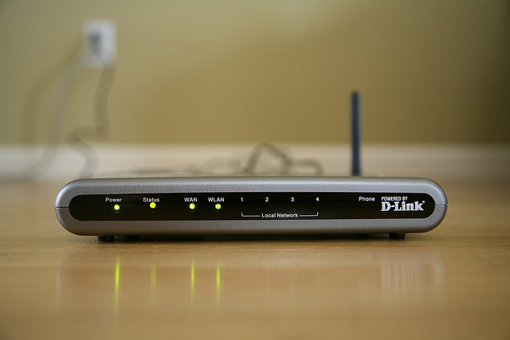
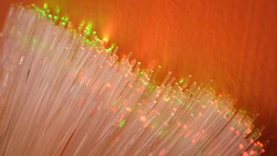

PCH4-Cases, Form Factors, and Power Supplies <<
Previous Next >> 40923220 UNIT 3 Page 49~60
PCH5-Motherboards, Expansion Buses, and Processors
Motherboards and Components 主板和組件
In this lesson, we will cover the purpose and function of the motherboard. We will also cover central processing units (CPUs) and the various technologies that exist to provide specialized functionality for CPUs, such as virtualization, hyperthreading, and multicore processors. Finally, we will cover the various methods of CPU cooling available, such as active and passive heat sinks, as well as liquid cooling.
在本課程中，我們將介紹主板的用途和功能。我們還將介紹中央處理器（CPU）和為CPU提供專門功能的各種技術，例如虛擬化，超線程和多核處理器。最後，我們將介紹可用的各種CPU冷卻方法，例如主動和被動散熱器以及液體冷卻。
Motherboards are the foundation of the computer. The motherboard acts like a city block and the bus is like the streets. The components are like the buildings in the city, so that if you want to go from one building to another (or in our case if we want information to flow from one component to another), it has to travel across the bus (the streets). The bus is what physically connects the various components of the motherboard to each other, allowing information to flow into and out of the various computer components. Motherboards come in a variety of shapes, sizes, and layouts; the specific shape, size, and layout of a motherboard is called its form factor. The motherboard is one of the most important computer components, since every other component plugs into the motherboard, either into a dedicated socket (such as the CPU), an expansion slot (used for various expansion cards), or a connector (such as SATA storage devices and audio inputs/outputs). The motherboard truly is the central meeting point for all the components in the computer.
主板是計算機的基礎。主板就像一個街區，公交車就像街道。這些組件就像城市中的建築物，因此，如果您要從一棟建築物轉到另一棟建築物（或者在我們的情況下，如果我們希望信息從一個組件流向另一組件），則它必須穿越公交車（街道） ）。總線將主板的各個組件物理連接在一起，使信息可以流入和流出各個計算機組件。主板有各種形狀，大小和佈局。主板的特定形狀，大小和佈局稱為其外形尺寸。主板是最重要的計算機組件之一，因為其他所有組件都可以插入主板，無論是插入專用插槽（例如CPU），擴展槽（用於各種擴展卡）還是連接器（例如SATA）存儲設備和音頻輸入/輸出）。主板確實是計算機中所有組件的主要集合點。

Motherboard
Before we begin talking about the motherboard itself, we want to have a basic understanding of the various components that can connect to the motherboard. We will go into detail on each of these components in future lessons, but let’s take a look at some of the key components on a motherboard.
在開始討論主板本身之前，我們希望對可以連接到主板的各種組件有基本的了解。在以後的課程中，我們將詳細介紹這些組件中的每一個，但讓我們看一下主板上的一些關鍵組件。
Expansion Slots 擴展插槽
Expansion slots allow for additional functionality of the computer system. An expansion card is inserted into the expansion slot. There are many different types of expansion slots on a motherboard. The function of each of these types of slots will be discussed in far greater detail in a future module. Below is a brief summary of the most common types of expansion slots.
擴展插槽可提供計算機系統的其他功能。擴展卡已插入擴展槽。主板上有許多不同類型的擴展插槽。這些類型的插槽中的每一種的功能將在以後的模塊中進行更詳細的討論。以下是最常見的擴展插槽類型的簡要概述。
PCI — The conventional peripheral component interconnect slot, commonly referred to using its acronym.
PCI-X — A faster, 64-bit version of the PCI slot running at a bus speed of 133 MHz.
AGP — A dedicated graphics channel (bus) designed to be separate from the shared PCI bus. This allowed advances in 3D game design, hardware acceleration, and video playback.
PCIe — PCI express speeds exceed AGP speeds, and PCIe provides a singular slot type for all devices.
AMR — The audio modem riser card is a specific type of card used to fit additional cards into a compact space.
CNR — The communications network riser replaced the AMR, and allows for six-channel digital audio, networking functions, and other high-quality integrated audio support on a riser card.插槽中的每一種的功能將在以後的模塊中進行更詳細的討論。以下是最常見的擴展插槽類型的簡要概述。
PCI —傳統的外圍組件互連插槽，通常使用其縮寫詞來指代。
PCI-X — PCI插槽的更快的64位版本，以133 MHz的總線速度運行。
AGP —專用於與共享PCI總線分開的專用圖形通道（總線）。這使得3D遊戲設計，硬件加速和視頻播放方面有了進步。
PCIe — PCI Express的速度超過了AGP的速度，並且PCIe為所有設備提供了單個插槽類型。
AMR —音頻調製解調器轉接卡是一種特殊類型的卡，用於將其他卡裝入緊湊的空間。
CNR —通信網絡轉接卡取代了AMR，並在轉接卡上支持六通道數字音頻，網絡功能和其他高質量的集成音頻支持。
Chipset 芯片組
The chipset determines which CPUs a system can use, which integrated ports a system provides, and the type of expansion slots included in the motherboard. Where the motherboard’s form factor dictates the specific size, shape, and layout, the chipset determines what technologies are integrated into the board itself. Each chipset defines the memory controller, and specifies what kind of RAM can be used with the motherboard. This includes the type of RAM to be used (DDR, DDR2, DDR3, etc.) and the speed of the RAM (10600, 1333 MHz, etc.). The motherboard is broken down technologically into the “northbridge” and the “southbridge,” which will be discussed further in the next section. The chipset is designed by the manufacturer and cannot be upgraded or changed by the end user without replacing the entire motherboard. Therefore, it is important to carefully choose your motherboard and chipset before purchasing one that will meet your needs.
芯片組確定係統可以使用的CPU，系統提供的集成端口以及主板中包含的擴展插槽的類型。主板的尺寸決定了具體的尺寸，形狀和佈局，而芯片組則決定了將哪些技術集成到主板本身中。每個芯片組都定義了內存控制器，並指定了主板可以使用哪種RAM。這包括要使用的RAM的類型（DDR，DDR2，DDR3等）和RAM的速度（10600、1333 MHz等）。主板在技術上分為“北橋”和“南橋”，將在下一部分中進一步討論。該芯片組由製造商設計，如果不更換整個主板，最終用戶將無法升級或更改。因此，在購買滿足您需求的主板和芯片組之前，請務必謹慎選擇。
Northbridge 北橋The northbridge is known by several names. The first, and most common, is the memory controller hub (MCH), but it can also be called the graphics memory controller hub (GMCH) on Intel motherboards with integrated graphics on the motherboard. The northbridge serves as a connection between the CPU and the memory banks (RAM), PCIe x16, AGP graphics expansion slots, and other high-speed components. Essentially, the CPU operates extremely fast (such as in the 3 GHz or higher speeds), and the various components around the computer cannot operate as fast. The northbridge acts as a buffer to keep the high-speed devices feeding information to the CPU. While the memory may operate in the 1 to 2 GHz range, there is still lag between it and the CPU. The northbridge consolidates all of the high-speed inputs in order to maximize the efficiency of the CPU.北橋有幾個名字。第一個也是最常見的是內存控制器中樞（MCH），但也可以稱為Intel主板上具有集成顯卡的圖形內存控制器中樞（GMCH）。北橋用作CPU和內存庫（RAM），PCIe x16，AGP圖形擴展插槽以及其他高速組件之間的連接。從本質上講，CPU的運行速度非常快（例如3 GHz或更高的速度），並且計算機周圍的各種組件無法以如此快的速度運行。北橋充當緩衝區，以保持高速設備向CPU提供信息。雖然內存可以在1至2 GHz範圍內運行，但它與CPU之間仍然存在延遲。北橋合併所有高速輸入，以最大程度地提高CPU的效率。Southbridge 南橋The southbridge is known as the input/output controller hub (ICH). The southbridge serves as a connection between the CPU and the low-speed components of the computer. For example, the hard disk operates at very slow speeds in comparison to the CPU, but the input from the user (from the keyboard and mouse) occurs at even a slower rate than the hard disk. The ICH consolidates the input from the mass storage devices, DVD/CD drives, hard disk drives, floppy drives, USB ports, PCI expansion slots, CMOS, and the port cluster’s input/output, and then passes that information from the southbridge to the northbridge, and then on to the CPU for processing. This process maximizes the efficiency of the CPU’s ability to process data by removing the wait time for slower components on the southbridge and keeping the CPU processing other data during idle cycles.
南橋被稱為輸入/輸出控制器集線器（ICH）。南橋用作CPU和計算機低速組件之間的連接。例如，與CPU相比，硬盤以非常慢的速度運行，但是來自用戶（來自鍵盤和鼠標）的輸入發生的速度甚至比硬盤慢。 ICH整合了來自大容量存儲設備，DVD / CD驅動器，硬盤驅動器，軟盤驅動器，USB端口，PCI擴展插槽，CMOS和端口群集的輸入/輸出的輸入，然後將該信息從南橋傳遞到北橋，然後到CPU進行處理。通過消除對南橋上較慢的組件的等待時間，並使CPU在空閒週期內處理其他數據，此過程可最大程度地提高CPU處理數據的能力的效率。
Jumpers 跳腺
The motherboard also contains pins that provide additional configuration options to the computer system. These pins can be covered by a jumper device, a piece of plastic with a metallic interior that makes an electrical connection between a set of pins. The jumper allows for particular features to be enabled or disabled on the motherboard.
主板還包含用於為計算機系統提供其他配置選項的引腳。這些針腳可以用跨接器設備覆蓋，該跳線器是具有金屬內部的塑料片，在一組針腳之間建立電連接。跳線允許在主板上啟用或禁用特定功能。
Fan Connectors 風扇連接器
Each motherboard has several connectors for fans, specifically for the CPU fan and the case fan. These connectors provide power to the fans from the motherboard (ultimately from the power supply to the main motherboard power connector, then to the fans themselves). Some newer motherboards can provide PC health status, such as the fan speed, fan power, the board temperature, and other statistics. Most case fan connectors only have three pins, but the CPU fan connector can have four pins, with one pin dedicated to speed control. The fan speed can then be increased or decreased depending on the temperature of the CPU and the motherboard. As the temperature rises, a signal is sent to increase speed control, which in turn cools down the CPU and motherboard.
每個主板都有幾個風扇連接器，特別是CPU風扇和機箱風扇。這些連接器從主板為風扇提供電源（最終從電源到主板的主電源連接器，再向風扇本身供電）。一些較新的主板可以提供PC運行狀況，例如風扇速度，風扇功率，板溫度和其他統計信息。大多數機箱風扇連接器只有三個引腳，但是CPU風扇連接器可以具有四個引腳，其中一個引腳專用於速度控制。然後，可以根據CPU和主板的溫度來增加或減少風扇速度。隨著溫度的升高，將發送信號以提高速度控制，從而降低CPU和主板的溫度。
 Audio Connectors 音頻連接器Motherboards also contain connectors for audio devices, such as auxiliary input or CD playback. Some cases feature audio jacks for headphones and microphones on the front of the case; these features require a cable that runs from the case front to the audio connector on the motherboard. Another connector on the motherboard may be for the Sony/Philips digital interchange format (SPDIF) that is connected from the motherboard to an optical SPDIF connection, known as a header. These various audio connectors look the same on the motherboard and are usually only distinguished by the labeling of the ports on the motherboard. They are typically located on one of the edges of the motherboard.
Audio Connectors 音頻連接器Motherboards also contain connectors for audio devices, such as auxiliary input or CD playback. Some cases feature audio jacks for headphones and microphones on the front of the case; these features require a cable that runs from the case front to the audio connector on the motherboard. Another connector on the motherboard may be for the Sony/Philips digital interchange format (SPDIF) that is connected from the motherboard to an optical SPDIF connection, known as a header. These various audio connectors look the same on the motherboard and are usually only distinguished by the labeling of the ports on the motherboard. They are typically located on one of the edges of the motherboard.
主板還包含音頻設備的接口，例如輔助輸入或CD播放。某些機箱的正面配有耳機和麥克風的音頻插孔；這些功能需要從機箱正面到主板上的音頻連接器的電纜。主板上的另一個連接器可能是Sony / Philips數字交換格式（SPDIF），該連接器從主板連接到SPDIF光學連接器（稱為接頭）。這些各種音頻連接器在主板上看起來相同，通常僅通過主板上端口的標記來區分。它們通常位於主板的邊緣之一上。Front-Panel Connectors 前面板連接器
下圖顯示了前面板連接器以及各種彩色電纜。連接器使母板可以從電源開關，電源LED指示燈，硬盤驅動器活動指示燈，重置按鈕和機箱揚聲器（如果已安裝）發送/接收信息。連接器通常分組在主板的前邊緣，並且往往很小且難以安裝。通常，技術人員將不得不使用鑷子將其連接到插頭。在計算機內進行其他工作時，很容易意外拔下這些連接器，因此，最好在更換主機蓋之前重新檢查這些連接。例如，如果計算機無法開機，則可能不是電源問題，可能僅僅是“電源開關”前面板連接器已拔出。如果電源開關未完全插入主板，則計算機將無法打開。 Processor History 處理器歷史The first microprocessors were manufactured in the 1970s. These microprocessors were built on NMOS (n-type metal-oxide semiconductor) logic and transistors. Early on, four-bit processors, like the Intel 4004, were common. The Intel 4004 had 2300 transistors. It performed 60,000 operations per second and addressed 640 bytes of memory, and operated at a speed of 740 kHz. The Intel 4004 cost approximately $200. Later in the decade, eight-bit processors such as the Motorola 6502 superseded the four-bit chips. The Motorola 6502 was an eight micrometer process technology chip that was four millimeters square. By the end of the 1970s, 16-bit processors emerged.
Processor History 處理器歷史The first microprocessors were manufactured in the 1970s. These microprocessors were built on NMOS (n-type metal-oxide semiconductor) logic and transistors. Early on, four-bit processors, like the Intel 4004, were common. The Intel 4004 had 2300 transistors. It performed 60,000 operations per second and addressed 640 bytes of memory, and operated at a speed of 740 kHz. The Intel 4004 cost approximately $200. Later in the decade, eight-bit processors such as the Motorola 6502 superseded the four-bit chips. The Motorola 6502 was an eight micrometer process technology chip that was four millimeters square. By the end of the 1970s, 16-bit processors emerged.
第一批微處理器於1970年代製造。這些微處理器基於NMOS（n型金屬氧化物半導體）邏輯和晶體管構建。早期，四位處理器（例如Intel 4004）很常見。英特爾4004具有2300個晶體管。它每秒執行60,000次操作，尋址640字節的內存，並以740 kHz的速度運行。英特爾4004的價格約為200美元。十年後，摩托羅拉6502等八位處理器取代了四位芯片。摩托羅拉6502是8毫米製程技術芯片，面積為4毫米見方。到1970年代末，出現了16位處理器。
In the 1980s, 16-bit and 32-bit microprocessors were common among new designs, and CMOS (complementary metal-oxide semiconductor) technology overtook NMOS. Transistor count increased dramatically during the decade. The home computers of the 1980s predominantly used processors that were introduced in the 1970s. Versions of the Motorola 6502, first released in 1975, and the Zilog Z80 (1976), were at the core of many home computers, such as the Commodore 64 and the ZX Spectrum. Even the first-generation IBM PC used a processor from the 1970s: the Intel 8088. It was not until Intel's 80286 (in the IBM PC AT), and later the 80386, that 1980s computers used 1980s-designed processors. These late-decade processors offered higher clock speeds and 32-bit word length as well as new operating modes, such as protected mode, that were not available in earlier chips. Specifically, the Intel 80386 was a 32-bit chip. It had more than 275,000 transistors and could perform more than five million instructions every second. The 80386 cost approximately $299. Critically, in these more advanced chips, protected mode allowed the use of virtual memory and brought the graphical user interface to business computers, beginning with Microsoft Windows 2.0.
在1980年代，新設計中普遍使用16位和32位微處理器，並且CMOS（互補金屬氧化物半導體）技術取代了NMOS。在過去的十年中，晶體管的數量急劇增加。 1980年代的家用計算機主要使用1970年代引入的處理器。 1975年首次發布的Motorola 6502和Zilog Z80（1976）的版本是許多家用計算機的核心，例如Commodore 64和ZX Spectrum。甚至第一代IBM PC都使用了1970年代的處理器：Intel8088。直到Intel的80286（在IBM PC AT中）和後來的80386，1980年代的計算機才使用1980年代設計的處理器。這些近十年來的處理器提供了更高的時鐘速度和32位字長，以及新的工作模式，例如保護模式，這在早期的芯片中是不可用的。具體來說，英特爾80386是32位芯片。它擁有超過275,000個晶體管，每秒可執行超過500萬條指令。 80386的價格約為299美元。至關重要的是，在這些更高級的芯片中，從Microsoft Windows 2.0開始，保護模式允許使用虛擬內存，並將圖形用戶界面帶入商用計算機。
The 32-bit microprocessor dominated the consumer market in the 1990s. Processor clock speeds increased by more than tenfold between 1990 and 1999, and 64-bit processors began to emerge later in the decade. In the 1990s, microprocessors no longer used the same clock speed for the processor and the RAM. This technology allowed for the improvement in processor speeds. In 1993, Intel released the Pentium processor. The Pentium chip was a 60 MHz processor. It incorporated 3.1 million transistors and sold for approximately $875.
32位微處理器在1990年代主導了消費市場。在1990年至1999年之間，處理器時鐘速度提高了十倍以上，並且在該十年後期開始出現64位處理器。在1990年代，微處理器不再為處理器和RAM使用相同的時鐘速度。這項技術可以提高處理器速度。 1993年，英特爾發布了奔騰處理器。奔騰芯片是60 MHz處理器。它裝有310萬個晶體管，售價約為875美元。
In the 2000s, 64-bit processors became mainstream. Microprocessor clock speeds reached a ceiling because cooling technology peaked. The ability to dissipate heat from the processor had reached a limit. Instead of implementing expensive and impractical cooling systems, manufacturers looked to other methods to improve processor performance by using multicore processor technology. Overclocking was born in the 1990s, but came into its own in the 2000s. With the introduction of multicore technology, processor costs began to drop dramatically.
在2000年代，64位處理器成為主流。由於冷卻技術達到頂峰，微處理器時鐘速度達到了上限。散發處理器熱量的能力已達到極限。製造商沒有採用昂貴且不切實際的冷卻系統，而是尋求其他方法來使用多核處理器技術來提高處理器性能。超頻誕生於1990年代，但在2000年代就已誕生。隨著多核技術的引入，處理器成本開始急劇下降。
Off-the-shelf cooling systems designed for overclocked processors became more and more common, as did the concept of a PC designed for gaming. Over the decade, transistor counts increased by about an order of magnitude, a trend continued from previous decades. Processor sizes decreased about fourfold, from 180 nm to 45 nm. In 2007 AMD released the Athlon X2 processor line. The AMD Athlon X2 Brisbane series processed at a speed of 1.9 to 2.6 GHz and it included a 512 KB L2 cache. In 2012, AMD released the A10-5700 desktop processor. It included a 4M L2 cache and processed at a speed of 3.4 GHz, or 4.0 GHz in turbo mode. AMD’s A10-5800K, released at the same time as the A10-5700, included the same cache, but provided for processing speeds of 3.8 GHz or 4.2 GHz in turbo mode. In the 2010s, processors typically hold between 2.5 and 4 billion transistors.
設計用於超頻處理器的現成的冷卻系統變得越來越普遍，而設計用於遊戲的PC的概念也越來越普遍。在過去的十年中，晶體管的數量增加了大約一個數量級，這一趨勢延續了過去的幾十年。處理器尺寸從180 nm減少到45 nm約四倍。 AMD在2007年發布了Athlon X2處理器系列。 AMD Athlon X2 Brisbane系列以1.9至2.6 GHz的速度進行處理，並包含512 KB L2緩存。 2012年，AMD發布了A10-5700台式機處理器。它包括一個4M L2高速緩存，並以3.4 GHz或Turbo模式下的4.0 GHz的速度進行處理。 AMD的A10-5800K與A10-5700同時發布，具有相同的緩存，但在Turbo模式下可提供3.8 GHz或4.2 GHz的處理速度。在2010年代，處理器通常容納2.5至40億個晶體管。
Virtualization 虛擬化
Virtualization is a wonderful addition to our CPUs. Virtualization is taking the computer world by storm, saving us a ton of money in the process. In the past, if we wanted to run multiple operating systems, we would have to have multiple computers, but not anymore. Using hardware-assisted virtualization, we can enable a host program or host operating system (think a single physical computer) to run one or more guest operating systems (think virtual computers) inside the host OS’s desktop. In the image below, you can see a Macintosh OSX system running Windows in a program window, as well as Ubuntu Linux in another program window. In this example, we have three different operating systems in use on a single computer at the same time. There are many programs that allow this to occur, including the vastly popular commercial program VMWare and the freeware equivalent VirtualBox.
虛擬化是CPU的絕佳補充。虛擬化正在席捲計算機世界，在此過程中為我們節省了大量資金。過去，如果要運行多個操作系統，則必須有多台計算機，但現在不再需要。使用硬件輔助虛擬化，我們可以使主機程序或主機操作系統（認為是一台物理計算機）在主機OS的桌面內運行一個或多個來賓操作系統（認為是虛擬計算機）。在下面的圖像中，您可以在程序窗口中查看運行Windows的Macintosh OSX系統，並在另一個程序窗口中查看Ubuntu Linux。在此示例中，我們在同一台計算機上同時使用三種不同的操作系統。有許多程序可以使這種情況發生，包括廣受歡迎的商業程序VMWare和等同於免費軟件的VirtualBox。
Why would we want to run multiple systems, though? Well, what if you work for a company that only uses a custom program it built for Windows but you own a Macintosh and need to run that program at home? In the old days, you would buy a PC just to run that single program. Now you can just load up a Virtual Windows 7 machine in your Macintosh and run the program. On the server side, servers costs tens of thousands of dollars. If you want to run a small web server, you may not need that type of processing. So, hosting companies can use a single server and provide hundreds of virtual servers on the single server and you pay only a few dollars a month for access.
但是，為什麼我們要運行多個系統？好吧，如果您在一家僅使用為Windows構建的自定義程序但擁有Macintosh並需要在家運行該程序的公司工作，該怎麼辦？在過去，您只需要購買一台PC即可運行該程序。現在，您只需在Macintosh中加載Virtual Windows 7計算機並運行該程序即可。在服務器方面，服務器要花費數万美元。如果要運行小型Web服務器，則可能不需要這種類型的處理。因此，託管公司可以使用單個服務器，並在單個服務器上提供數百個虛擬服務器，您每月只需支付幾美元的訪問費。
Virtualization is continuing to expand and will continue to do so for the foreseeable future. Many companies and individuals are migrating to the cloud where virtual machines exist without the need for on-premises hardware. In cloud computing, infrastructure to run multiple operating systems or software is purchased from a cloud computing company as a service.
虛擬化正在繼續擴展，並將在可預見的將來繼續擴展。許多公司和個人正在遷移到存在虛擬機而無需內部部署硬件的雲中。在雲計算中，從雲計算公司作為服務購買了運行多個操作系統或軟件的基礎架構。
Integrated Graphics Processing Unit 集成圖形處理單元（GPU）
The integrated graphics processing unit (GPU) allows for faster video processing, easier access to memory, and an overall lower cost to building a system. The idea is that instead of having a dedicated graphics card that could cost hundreds of dollars, the graphics are instead handled by a dedicated graphics coprocessor inside the CPU (the bottom, smaller chip in the image shown below). These work well for non-3D uses, such as web surfing, office products, DVD and video playback, or low-end games. However, if the system will be used for video/graphic production, computer aided design (CAD), or gaming, a discrete (dedicated) graphics card is more desirable, usually connected by using the PCIe x16 slot on the motherboard.
集成的圖形處理單元（GPU）允許更快的視頻處理，更容易的內存訪問以及總體上較低的構建系統成本。這個想法是，圖形不是由可能花費數百美元的專用圖形卡，而是由CPU內部的專用圖形協處理器（如下圖所示，底部的較小芯片）處理。這些功能非常適合非3D用途，例如網絡衝浪，辦公產品，DVD和視頻播放或低端遊戲。但是，如果將系統用於視頻/圖形製作，計算機輔助設計（CAD）或遊戲，則通常需要使用母板上的PCIe x16插槽進行連接的獨立（專用）圖形卡。
PCH4-Cases, Form Factors, and Power Supplies <<
Previous Next >> 40923220 UNIT 3 Page 49~60